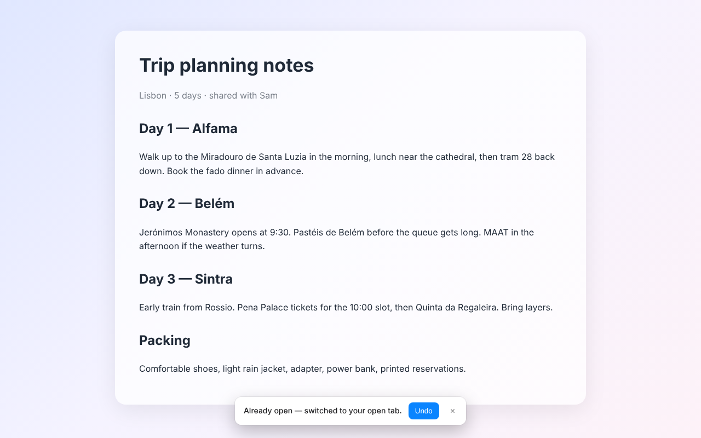

No more duplicates
Already open? You're switched to it.
Open a page you already have open and TabFlow takes you to the existing tab instead of adding another one. A notice with Undo appears, so you stay in control.
- Only newly opened tabs are affected; browsing inside a tab is never interrupted.
- Different pages on the same site stay separate, unless you mark the site as one tab only.
- "Close Duplicate Tabs" shows exactly which tabs will close first, and archives them.
